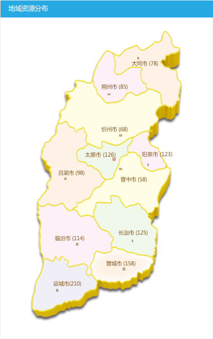

欢迎
test001
登录文化大数据库！
[退出]
[进入后台]
艺术(158)
艺术门类(158)
公共文化(625)
非物质文化遗产(366)
代表项目及传承人
文化生态保护区
生产性保护生产基地
乡村文化记忆工程
非遗展示
文化产业(295)
企业名录
产业项目
文化产品
园区基地
会展服务
文化政策(125)
艺术 > 艺术门类
戏剧
88
戏曲
（22）
话剧
（12）
舞剧
（13）
歌剧
（25）
儿童剧
（12）
音乐剧
（14）
音乐
66
歌曲
（23）
器乐
（43）
舞蹈
42
古典舞
（12）
芭蕾舞
（22）
民族舞
（18）
民间舞
（18）
现代舞
（18）
美术
28
绘画
（12）
雕塑
（12）
工艺美术
（13）
建筑
（2）
曲艺
38
鼓书类
（12）
弦书类
（12）
板诵类
（13）
相声
（2）
曲艺小品
（5）
表演唱
（2）
杂技
23
顶技
（12）
吊子
（12）
口技
（13）
蹬技
（2）
耍花坛
（5）
走钢丝
（2）
爬杆
（11）
转碟
（2）
书法
28
篆书
（12）
隶书
（12）
楷书
（13）
行书
（2）
草书
（5）
